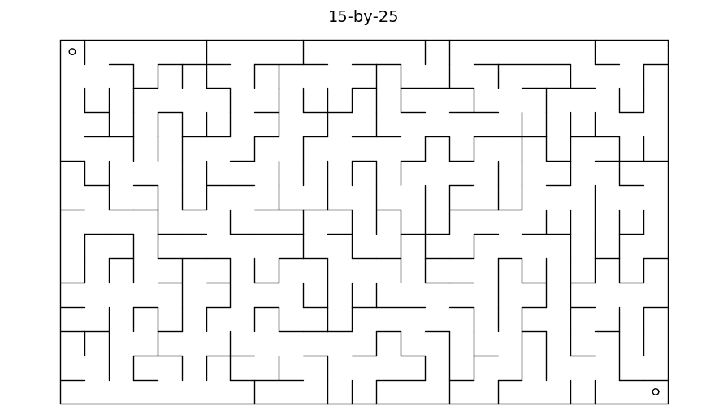

Mazes
This is a Julia module to create mazes. Begin with using Mazes.
A new (random) maze is created with Maze(r,c) where r and c are integers that are at least two.
To see the maze on the screen, use draw(M). Then, to see the solution to the maze, use draw_ans(M).
Example
julia> using Mazes
julia> M = Maze(15,25)
Maze(15,25)
julia> draw(M)produces a maze like this:

The full syntax for draw is
draw(M::Maze, markers::Bool=true, title::Bool=true)where markers controls whether small circles are drawn in the upper left and lower right.
Solution
To see the answer, use draw_ans(M):

Printing
Maze puzzles are easier to solve on paper. To save the maze as a document, do this:
julia> using Plots
julia> savefig("name.pdf")